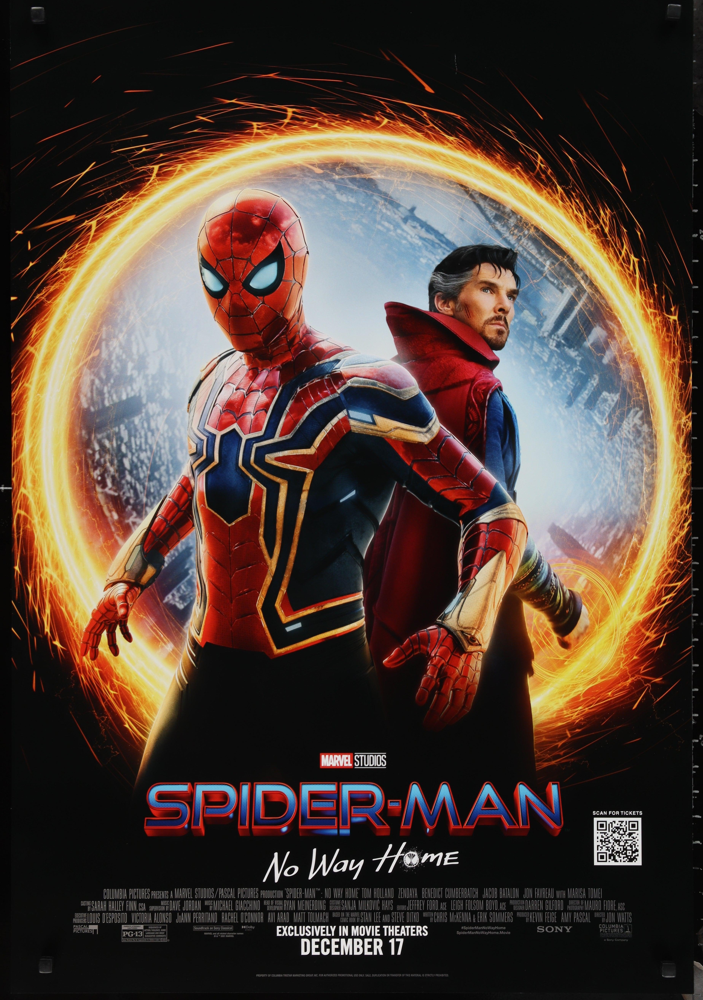
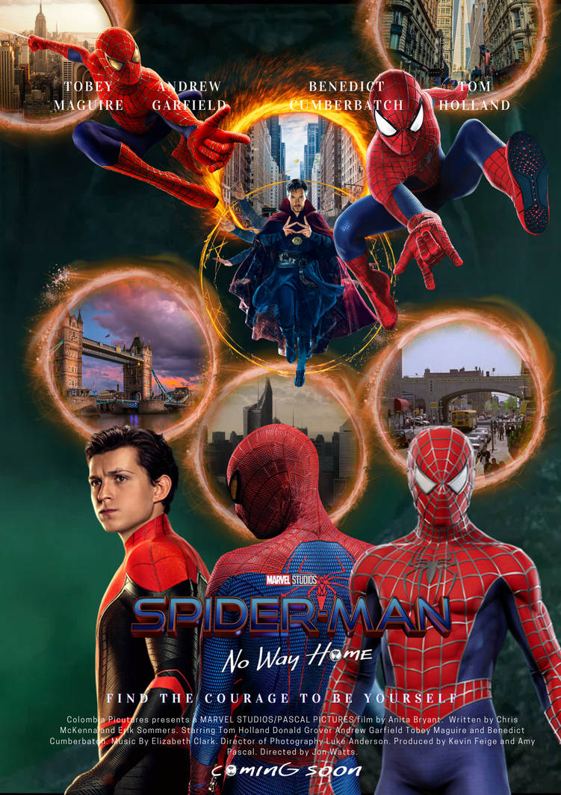
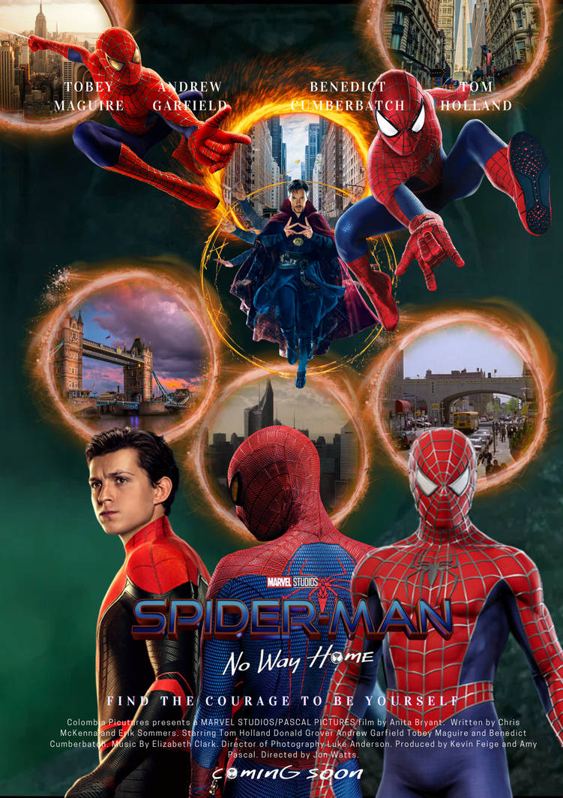
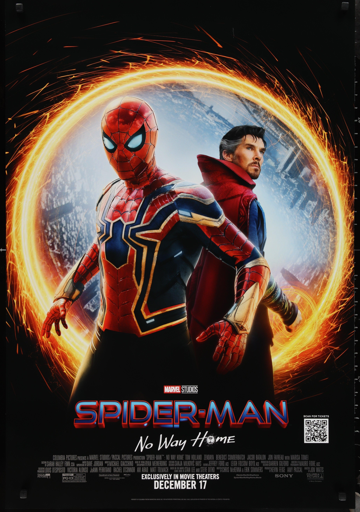
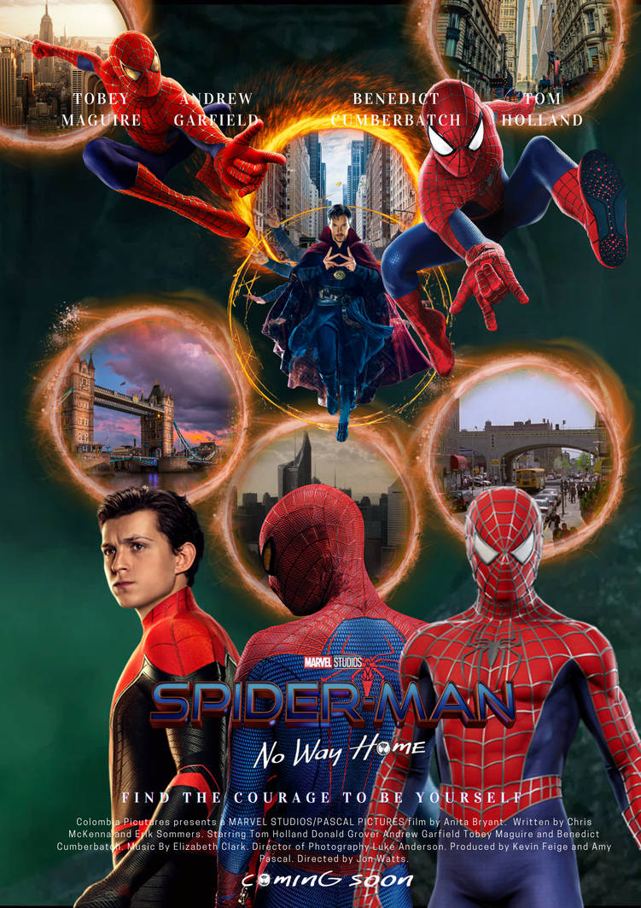

Spider-Man: No Way Home
Welcome to the fan page of Spider-Man: No Way Home!
 

Welcome to the fan page of Spider-Man: No Way Home!



Tom Holland plays Peter Parker, the Spider-Man of the MCU who must confront the challenges of his identity being revealed to the world.
Zendaya portrays MJ, Peter Parker's love interest, who stands by his side through the chaos brought about by his unmasked identity.

Benedict Cumberbatch plays Doctor Strange, the sorcerer who helps Peter by casting a spell to erase the world’s knowledge of his identity as Spider-Man.
Jacob Batalon plays Ned Leeds, Peter’s best friend who is caught up in the multiverse adventure and plays a key role in helping Spider-Man.
Andrew Garfield returns as Spider-Man from an alternate universe, where he battles foes from his own timeline and helps the MCU Spider-Man.
Tobey Maguire reprises his role as Spider-Man from the original trilogy, joining forces with the other Spider-Men to take on multiverse villains.
Alfred Molina returns as Dr. Otto Octavius, the brilliant scientist who becomes the villain Doc Ock after a failed experiment with robotic tentacles.
Willem Dafoe reprises his role as Norman Osborn, also known as the Green Goblin, who brings chaos and terror from another dimension.
Test your knowledge about Spider-Man: No Way Home!